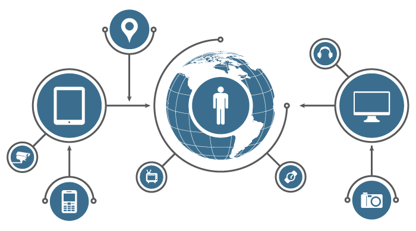

Actualización tecnológica
La materia de Actualización tecnológica pretende que el alumno describa una visión global de las tecnologías de informaciósus aplicaciones, tendencias y prospectivas.
La Actualización tecnológica abarca los temas:
- Historia de las computadoras
- Partes de ensamble de computadora
- Hardware complementario
- Tipo de Hardware
- Medios Ópticos
- Creación de páginas web con HTML

En la materia de Actualización tecnológica además de indagar en las innovaciones de la computación, tuvimos una certificación en la aplicación de Microsoft Office Access 2016, la cual desarrollamos a través de las plataformas virtuales de Jasperactive, GMetrix, Ciidte y concluyendo con la Aplicación de Console 8, donde realizamos el examen final de certificación.

La materia culmina con el desarrollo y publicación de una página web,creada a través del lenguaje de marcado HTML haciendo uso también del código CSS para poder diseñar una interfaz gráfica amigable con los usuarios que ingresen a ella.